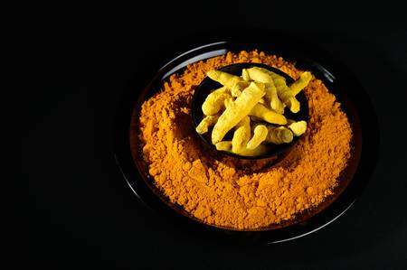

Turmeric

- Grown for its root, turmeric has an ancient history of uses in cooking, fabric dyeing, cosmetics and traditional medicine in China and India.
- Turmeric and especially its most active compound curcumin have many scientifically-proven health benefits, such as the potential to prevent heart disease,
- Turmeric is safe for most people when consumed in amounts found in food. But turmeric can have side effects when taken in large doses.
- Its potent ingredient, curcumin, not only gives turmeric its golden colour, but also has a dazzling array of properties that are beneficial to health.
- The curcumin in turmeric has proven, strong anti-inflammatory properties that block the action of inflammatory molecules in the body. Studies show positive effects of curcumin on people suffering from conditions such as rheumatoid arthritis and inflammatory bowel disease, amongst others.
- Curcumin has been shown to be a robust scavenger of oxygen free radicals, which are chemically active molecules that cause damage to the body’s cells. Free radical damage, along with inflammation, is a key driver of cardiovascular disease, so curcumin can play a part in preventing and managing heart disease.
- Numerous animal studies have explored turmeric’s influence on cancer, and many have found that it can affect cancer formation, growth and development at a molecular level.
- Turmeric and curcumin may also be able to counteract the effects of some carcinogens, such as certain additives used in processed food.
- According to a study, turmeric has been shown to help reduce the symptoms of skin conditions like psoriasis and eczema.
- There is growing evidence that curcumin can cross the blood-brain barrier and may help to protect against Alzheimer’s disease. It works to reduce inflammation as well as the build-up of protein plaques in the brain that are characteristic of Alzheimer’s disease sufferers.
- While most of the current research is being carried out in a lab or on animals, the results are encouraging, and this wonderful spice will continue to be investigated as a powerful tool in improving our health.
- Turmeric has been used in ancient Indian culture as not only an aphrodisiac, but as a postpartum tonic too!